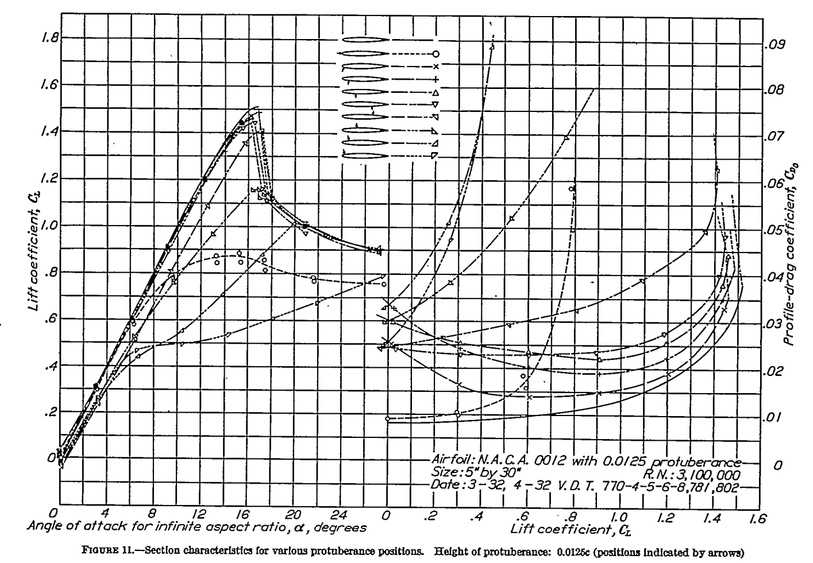
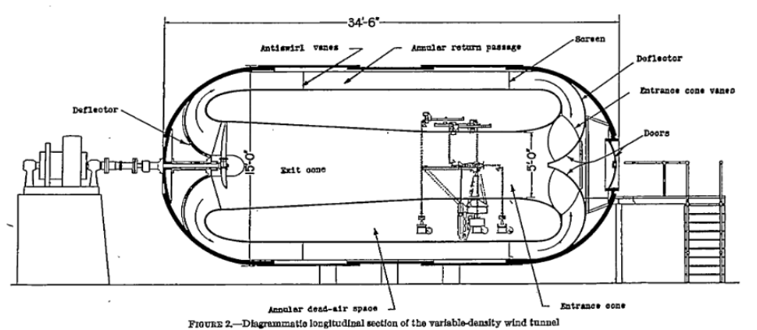
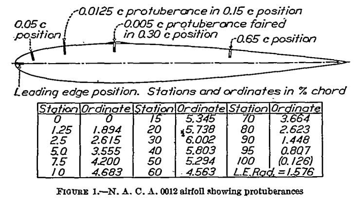
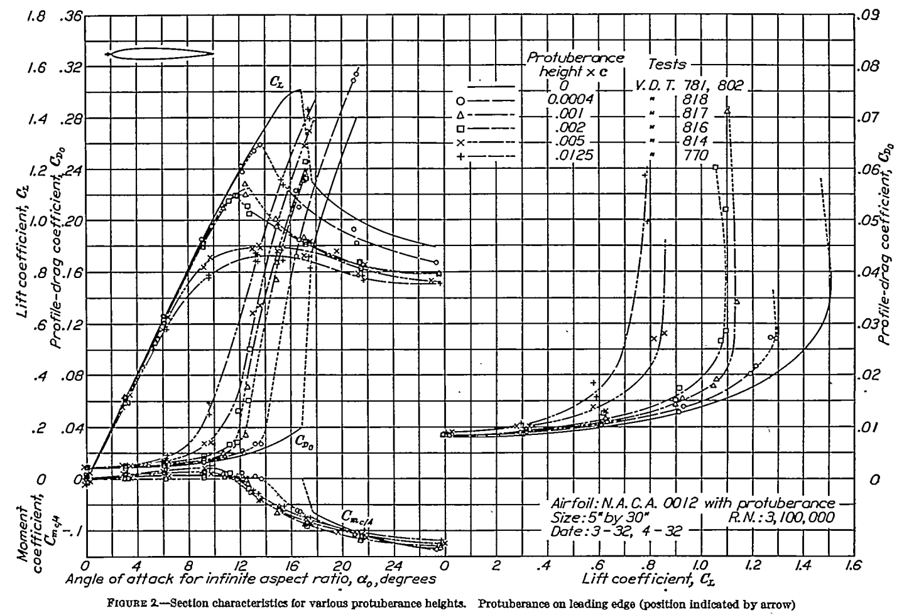
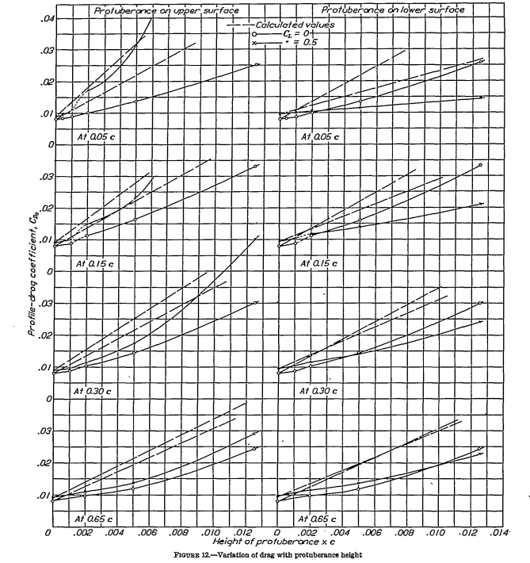
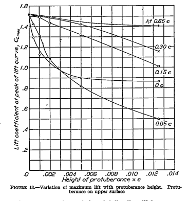
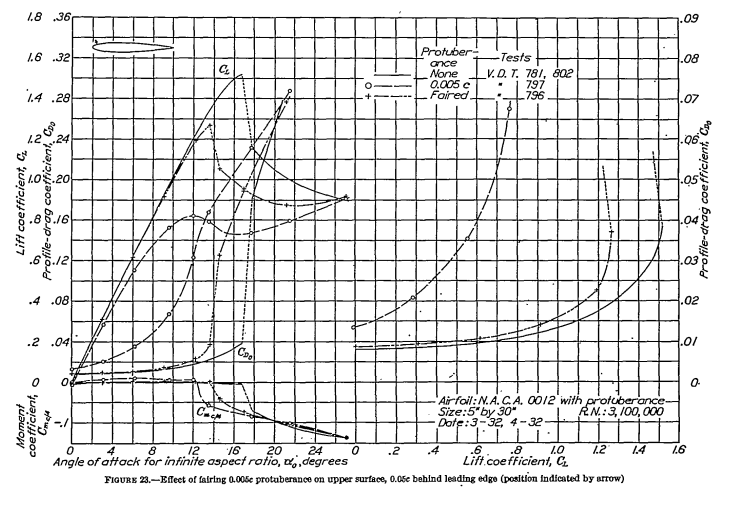

"As regards the lift at higher angles of attack ..., the [effect] becomes increasingly serious as the protuberance approaches a point near the leading edge."

NACA-TR-446, "Airfoil Section Characteristics as Affected by Protuberances" 1
Summary
"Protuberances" on an airfoil can have significant effects on section lift and drag.
Key Points
- Position and height of the protuberance are important.
- While icing is not mentioned, later works will apply this data in an icing context.
Abstract
The drag and interference caused by protuberance from the surface of an airfoil have been determined in the N.A.C.A. Variable-Density Wind Tunnel at a Reynolds Number of approximately 3,100,000. The effects of variations of the fore-and-aft position, height, and shape of the protuberance were measured by determining how the airfoil section characteristics were affected by the addition of th various protuberances extending along the entire span of the airfoil. The results provide fundamental data on which to base the prediction of the effects of actual short-span protuberances. The data may also be applied to the design of air brakes and spoilers.
Discussion
This publication does not mention ice or icing, but it has shaped many perceptions about the effects of ice on an airfoil.
The Variable-Density Wind Tunnel was used 2 (which is now on the U.S. National Register of Historic Places 3). This pressurized wind tunnel allowed achieving a fairly high Reynolds Number, even if the test article was not large. 
Sheet-metal "protuberances" were positioned at various locations on the model.

For NACA-TR-446, tunnel data corrections are explained:
Attention should be here called to the fact, however, that the characteristics thus presented should not be used with precise strip method calculations as though they were true infinite-aspect-ratio characteristics, but should be considered as average section characteristics deduced from the test data by the methods described in reference 2. Differences between these section characteristics and the true ones may probably be neglected as long as all the sections of the rectangular wing that was tested were operating at effective angles of attack are within the range of approximately normal lift curve slope. Their use is also partly justified by the fact that approximately correct results for a full-span protuberance on a wing of normal aspect ratio are obtained from them when the simple aspect-ratio corrections (reference 2) are applied.
The protuberance heights had different effects at one location.

Different locations had different effects at one protuberance height.
Drag was roughly proportional to protuberance height, but varied by location.

The effects on maximum lift of protuberance height and location were summarized.

Fairing the protuberance had some effect.

Conclusions
The following conclusions of immediate practical value may be drawn from the results in regard to the effects of full-span protuberances.
1. For most of the unfaired protuberances investigated except those very near the lending edge, the drag resulting from the addition of the protuberance could be roughly estimated as equal to or greater than, the product of the free-stream dynamic pressure and the protuberance frontal area.
2. The greater drag increases may result from protuberances the height of which exceeds 0.001c, particularly when the protuberances are from points along either surface forward of the maximum-thickness position.
3. Very large increases of drag may result from the interference of a protuberance having a height exceeding 0.005c if it is on the forward portion of the upper surface of the profile.
4. A simple fairing over the protuberance greatly reduces but does not entirely eliminate the adverse effect.
5. The effect of a protuberance on the maximum lift is unimportant when the protuberance is on the lower surface, but becomes very important, even for a protuberance so small that it would ordinarily be classed as a surface roughness, as the position approaches the leading edge along the upper surface.
This data was for a single, 2D airfoil section at one Reynolds number, but it has been used as a general "map" of the expected effects of aircraft icing [we will see examples in the Conclusions of the Ice Shapes and Their Effect thread].
NACA-TR-446 is cited several times in the recent literature in the context of ice shapes on an airfoil.
The data are also an excellent test for your favorite CFD method, to see how high of an angle of attack that you can reproduce test results, both with and without a protuberance.
Citations
NACA-TR-446 cites 5 references.
- Ower, E.: Interference. Roy. Aero. Soc. Jour., July, 1932.
- Jacobs, Eastman N., and Abbott, Ira H.: The N.A.C.A. Variable-Density Wind Tunnel. NACA-TR-416, 1932.
- Jacobs, Eastman N.: Tests of Six Symmetrical Airfoils in the Variable-Density Wind Tunnel. NACA-TR-385, 1931.
- Wieselberger, C., and Betz, A.: Ergebnisse der Aerodynamischen Versuchsanstalt zu Gottingen. Oldenburg (Munchen), 1923. II Liferung, pp. 33-34.
- Theodorsen, Theodore: Theory of Wing Sections of Arbitrary Shape. NACA-TR-411, 1931.
NACA-TR-446 is cited 5 times in the NACA Icing Publications Database4
- Neel, Carr B., Jr., and Bright, Loren G.: The Effect of Ice Formations on Propeller Performance. NACA-TN-2212, 1950.
- Gray, Vernon H., and von Glahn, Uwe H.: Effect of Ice and Frost Formations on Drag of NACA 651_212 Airfoil for Various Modes of Thermal Ice Protection. NACA-TN-2962, 1953.
- von Glahn, Uwe H., and Gray, Vernon H.: Effect of Ice Formations on Section Drag of Swept NACA 63A-009 Airfoil with Partial-Span Leading-Edge Slat for Various Modes of Thermal Ice Protection. NACA-RM-E53J30, 1954.
- Bowden, Dean T.: Effect of Pneumatic De-Icers and Ice Formations on Aerodynamic Characteristics of an Airfoil. NACA-TN-3564, 1956.
- Gray, Vernon H.: Correlations Among Ice Measurements, Impingement Rates, Icing Conditions and Drag Coefficients for an Unswept NACA 65A004 Airfoil. NACA-TN-4151, 1958.
An online search 5 found 103 citations of NACA-TR-446, many of them in an icing context.
Notes
-
Jacobs, Eastman N.: Airfoil Section Characteristics as Affected by Protuberances. NACA-TR-446, 1932 ntrs.nasa.gov. ↩
-
Jacobs, Eastman N., and Abbott, Ira H.: The N.A.C.A. Variable-Density Wind Tunnel. NACA-TR-416, 1932. ↩